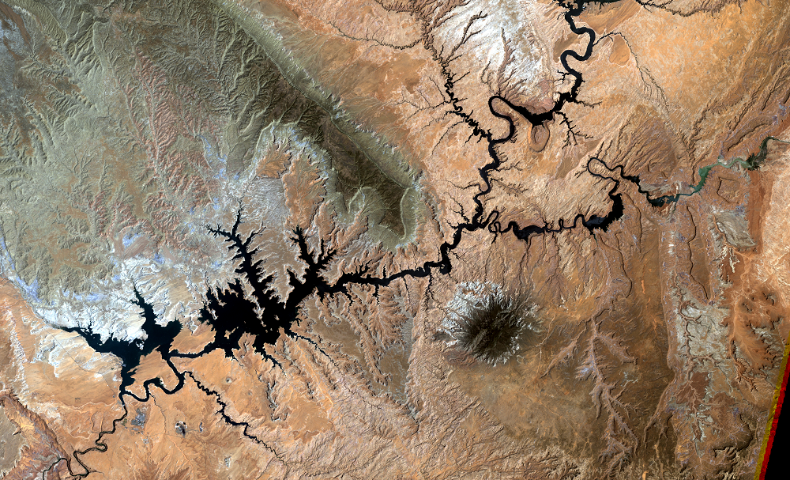

Climate change means a significant change in the measures of climate, such as temperature, rainfall, or wind, lasting for an extended period – decades or longer.
This graph, based on the comparison of atmospheric samples contained in ice cores and more recent direct measurements, provides evidence that atmospheric CO2 has increased since the Industrial Revolution. (Credit: Luthi, D., et al.. 2008; Etheridge, D.M., et al. 2010; Vostok ice core data/J.R. Petit et al.; NOAA Mauna Loa CO2 record.) Find out more about ice cores (external site).
The Earth's climate has changed throughout history. Just in the last 650,000 years there have been seven cycles of glacial advance and retreat, with the abrupt end of the last ice age about 7,000 years ago marking the beginning of the modern climate era — and of human civilization. Most of these climate changes are attributed to very small variations in Earth’s orbit that change the amount of solar energy our planet receives.
Earth-orbiting satellites and other technological advances have enabled scientists to see the big picture, collecting many different types of information about our planet and its climate on a global scale. This body of data, collected over many years, reveals the signals of a changing climate.
Ice cores drawn from Greenland, Antarctica, and tropical mountain glaciers show that the Earth’s climate responds to changes in greenhouse gas levels. Ancient evidence can also be found in tree rings, ocean sediments, coral reefs, and layers of sedimentary rocks. This ancient, or paleoclimate, evidence reveals that current warming is occurring roughly ten times faster than the average rate of ice-age-recovery warming.
The evidence for rapid climate change is compelling:
Global Temperature Rise
The planet's average surface temperature has risen about 1.62 degrees Fahrenheit (0.9 degrees Celsius) since the late 19th century, a change driven largely by increased carbon dioxide and other human-made emissions into the atmosphere.
The oceans have absorbed much of this increased heat, with the top 700 meters (about 2,300 feet) of ocean showing warming of more than 0.4 degrees Fahrenheit since 1969.
The Greenland and Antarctic ice sheets have decreased in mass. Data from NASA's Gravity Recovery and Climate Experiment show Greenland lost an average of 286 billion tons of ice per year between 1993 and 2016.
Glaciers are retreating almost everywhere around the world — including in the Alps, Himalayas, Andes, Rockies, Alaska and Africa.(The disappearing snowcap of Mount Kilimanjaro)
Scientists attribute the global warming trend observed since the mid-20th century to the human expansion of the "greenhouse effect" — warming that results when the atmosphere traps heat radiating from Earth toward space.
Gases that contribute to the greenhouse effect include:
Water vapor. The most abundant greenhouse gas, but importantly, it acts as a feedback to the climate. Water vapor increases as the Earth's atmosphere warms, but so does the possibility of clouds and precipitation, making these some of the most important feedback mechanisms to the greenhouse effect.
Carbon dioxide (CO2). A minor but very important component of the atmosphere, carbon dioxide is released through natural processes such as respiration and volcano eruptions and through human activities such as deforestation, land use changes, and burning fossil fuels.
Methane. A hydrocarbon gas produced both through natural sources and human activities, including the decomposition of wastes in landfills, agriculture, and especially rice cultivation, as well as ruminant digestion and manure management associated with domestic livestock.
Nitrous oxide. A powerful greenhouse gas produced by soil cultivation practices, especially the use of commercial and organic fertilizers, fossil fuel combustion, nitric acid production, and biomass burning.
Chlorofluorocarbons (CFCs). Synthetic compounds entirely of industrial origin used in a number of applications, but now largely regulated in production and release to the atmosphere by international agreement for their ability to contribute to destruction of the ozone layer. They are also greenhouse gases.

2000
2018
Global climate change has already had observable effects on the environment.
Glaciers have shrunk, ice on rivers and lakes is breaking up earlier, plant and animal ranges have shifted and trees are flowering sooner. Effects that scientists had predicted in the past would result from global climate change are now occurring: loss of sea ice, accelerated sea level rise and longer, more intense heat waves.
Scientists have high confidence that global temperatures will continue to rise for decades to come, largely due to greenhouse gases produced by human activities. The Intergovernmental Panel on Climate Change (IPCC), which includes more than 1,300 scientists from the United States and other countries, forecasts a temperature rise of 2.5 to 10 degrees Fahrenheit over the next century.
Future Effects
Temperatures Will Continue to Rise
Exercitation photo booth stumptown tote bag Banksy, elit small batch freegan sed. Craft beer elit seitan exercitation, photo booth et 8-bit kale chips proident chillwave deep v laborum.
Deforestation which leads to increased amount of CO2 in the atmosphere
Burning of fossil fuels
Use of too much of heavy duty as well as light vehicles that use CO2 producing fuels
Production of electricity by burning coal & natural gas instead of alternative sources
Changes in Precipitation Patterns
Exercitation photo booth stumptown tote bag Banksy, elit small batch freegan sed. Craft beer elit seitan exercitation, photo booth et 8-bit kale chips proident chillwave deep v laborum.
As we are well aware, moisture availability from precipitation is unequally distributed across the Earth. The geographic pattern of precipitation is explained by examining the spatial distribution of air masses, water availability through evaporation, and uplift mechanisms. One of the most important climate elements is the influence of the global pressure systems
More Droughts and Heat Waves
Exercitation photo booth stumptown tote bag Banksy, elit small batch freegan sed. Craft beer elit seitan exercitation, photo booth et 8-bit kale chips proident chillwave deep v laborum.
A heatwave occurs when a system of high atmospheric pressure moves into an area and lasts two or more days. In such a high-pressure system, air from upper levels of our atmosphere is pulled toward the ground, where it becomes compressed and increases in temperature.
Sea Level Will Rise 1-4 feet by 2100
Exercitation photo booth stumptown tote bag Banksy, elit small batch freegan sed. Craft beer elit seitan exercitation, photo booth et 8-bit kale chips proident chillwave deep v laborum.
The two major causes of global sea level rise are thermal expansion caused by warming of the ocean (since water expands as it warms) and increased melting of land-based ice, such as glaciers and ice sheets.
American Scientific Societies
Statement on Climate Change from 7 Scientific Associations
American Chemical Society
2004
Comprehensive scientific assessments of our current and potential future climates clearly indicate that climate change is real, largely attributable to emissions from human activities, and potentially a very serious problem.
American Geophysical Union
2003, 2007, 2012, 2013
Human‐induced climate change requires urgent action. Humanity is the major influence on the global climate change observed over the past 50 years. Rapid societal responses can significantly lessen negative outcomes.
The Geological Society of America
2006
The Geological Society of America (GSA) concurs with assessments by the National Academies of Science (2005), the National Research Council (2006), and the Intergovernmental Panel on Climate Change (IPCC, 2007) that global climate has warmed and that human activities.
American Medical Association
2006, 2007
Our AMA ... supports the findings of the Intergovernmental Panel on Climate Change’s fourth assessment report and concurs with the scientific consensus that the Earth is undergoing adverse global climate change and that anthropogenic contributions are significant.
U.S. National Academy of Sciences
2005
The scientific understanding of climate change is now sufficiently clear to justify taking steps to reduce the amount of greenhouse gases in the atmosphere.
Carbon dioxide (CO2) is an important heat-trapping (greenhouse) gas, which is released through human activities such as deforestation and burning fossil fuels, as well as natural processes such as respiration and volcanic eruptions. The first graph shows atmospheric CO2 levels measured at Mauna Loa Observatory, Hawaii, in recent years, with average seasonal cycle removed. The second graph shows CO2 levels during the last three glacial cycles, as reconstructed from ice cores.
The time series below shows global distribution and variation of the concentration of mid-tropospheric carbon dioxide in parts per million (ppm). The overall color of the map shifts toward the red with advancing time due to the annual increase of CO2.
This graph illustrates the change in global surface temperature relative to 1951-1980 average temperatures. Eighteen of the 19 warmest years all have occurred since 2001, with the exception of 1998. The year 2016 ranks as the warmest on record. (Source: NASA/GISS). This research is broadly consistent with similar constructions prepared by the Climatic Research Unit and the National Oceanic and Atmospheric Administration.
The time series below shows the five-year average variation of global surface temperatures. Dark blue indicates areas cooler than average. Dark red indicates areas warmer than average.
Data from NASA's GRACE satellites show that the land ice sheets in both Antarctica (upper chart) and Greenland (lower) have been losing mass since 2002. Both ice sheets have seen an acceleration of ice mass loss since 2009. (Source: GRACE satellite data)
Please note that the most recent data are from June 2017, when the GRACE mission concluded science operations. Users can expect new data from GRACE’s successor mission, GRACE Follow-On, in the summer of 2019.
Data from NASA's GRACE satellites show that the land ice sheets in both Antarctica (upper chart) and Greenland (lower) have been losing mass since 2002. Both ice sheets have seen an acceleration of ice mass loss since 2009. (Source: GRACE satellite data)
Please note that the most recent data are from June 2017, when the GRACE mission concluded science operations. Users can expect new data from GRACE’s successor mission, GRACE Follow-On, in the summer of 2019.
At Themesberg, our mission has always been focused on bringing openness and transparency to the design process. We've always believed that by providing a space where designers can share ongoing work not only empowers them to make better products, it also helps them grow. We're proud to be a part of creating a more open culture and to continue building a product that supports this vision.
What do volcanoes have to do with climate change?
At Themesberg, our mission has always been focused on bringing openness and transparency to the design process. We've always believed that by providing a space where designers can share ongoing work not only empowers them to make better products, it also helps them grow. We're proud to be a part of creating a more open culture and to continue building a product that supports this vision.
Is it too late to prevent climate change?
At Themesberg, our mission has always been focused on bringing openness and transparency to the design process. We've always believed that by providing a space where designers can share ongoing work not only empowers them to make better products, it also helps them grow. We're proud to be a part of creating a more open culture and to continue building a product that supports this vision.
What’s the difference between weather and climate?
At Themesberg, our mission has always been focused on bringing openness and transparency to the design process. We've always believed that by providing a space where designers can share ongoing work not only empowers them to make better products, it also helps them grow. We're proud to be a part of creating a more open culture and to continue building a product that supports this vision.
Do scientists agree on climate change?
At Themesberg, our mission has always been focused on bringing openness and transparency to the design process. We've always believed that by providing a space where designers can share ongoing work not only empowers them to make better products, it also helps them grow. We're proud to be a part of creating a more open culture and to continue building a product that supports this vision.
What is the greenhouse effect?
At Themesberg, our mission has always been focused on bringing openness and transparency to the design process. We've always believed that by providing a space where designers can share ongoing work not only empowers them to make better products, it also helps them grow. We're proud to be a part of creating a more open culture and to continue building a product that supports this vision.
How is Earth’s sea ice faring in our warming world?
At Themesberg, our mission has always been focused on bringing openness and transparency to the design process. We've always believed that by providing a space where designers can share ongoing work not only empowers them to make better products, it also helps them grow. We're proud to be a part of creating a more open culture and to continue building a product that supports this vision.